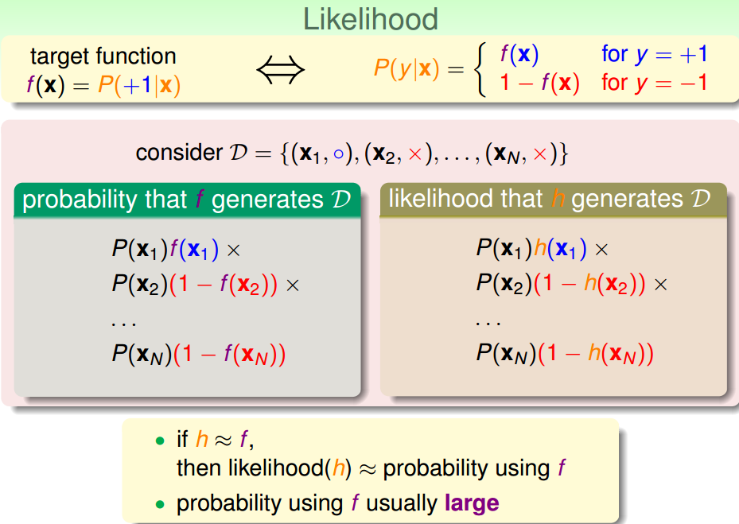
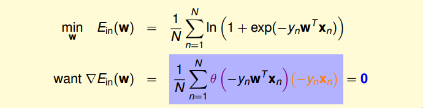

上一節課，介紹了 Linear Regression 線性回歸，以及用平方錯誤來尋找最佳的權重向量，獲得最好的線性預測。本節課將介紹 Logistic Regression 邏輯回歸問題。
# Logistic Regression Problem
一個心臟病預測的問題：根據患者的年齡、血壓、體重等資訊，來預測患者是否會有心臟病。很明顯這是一個二分類問題，其輸出 y 只有 {-1,1} 兩種情況。
二元分類在一般情況下，理想的目標函數 f (x)>0.5，則判斷為正類 1；若 f (x)<0.5，則判斷為負類 - 1。
但是，如果我們想知道的不是患者有沒有心臟病，而是到底患者有多大機率是心臟病。這表示，我們更關心的是目標函數的值（分佈在 0,1 之間），表示是正類的概率（正類表示是心臟病）。這跟我們原來討論的二分類問題不太一樣，我們把這個問題稱為軟性二分類問題（ soft binary classification ）。這個值越接近 1，表示正類的可能性越大；越接近 0，表示負類的可能性越大。

對於軟性二分類問題，理想的資料是分佈在 [0,1] 之間的具體值，但是實際中的資料只可能是 0 或者 1，我們可以把實際中的資料看成是理想資料加上了雜訊的影響。
如果目標函數是 的話，我們如何找到一個好的 Hypothesis 跟這個目標函數很接近呢？
首先，根據之前的做法，對所有的特徵值進行加權處理。計算的結果 s，我們稱之為 risk score ：
但是特徵加權和，如何將 s 值限定在 [0,1] 之間呢？一個方法是使用 sigmoid Function ，記為。那麼我們的目標就是找到一個 hypothesis ：
# Logistic Regression Error
現在我們將 Logistic Regression 與之前的 Linear Classification 、 Linear Regression 做個比較：
這三個線性模型都會用到線性 scoring function 。 linear classification 的誤差使用的是 0/1 err ； linear regression 的誤差使用的是 squared err 。那麼 logistic regression 的誤差該如何定義呢？
先介紹一下似然性的概念。目標函數，如果我們找到了 hypothesis 很接近 target function 。也就是說，在所有的 Hypothesis 集合中找到一個 hypothesis 與 target function 最接近，能產生同樣的資料集 D，包含 y 輸出 label ，則稱這個 hypothesis 是最大似然 likelihood 。

如果將 代入的話：
為了把連乘問題簡化計算，我們可以引入 操作，讓連乘轉化為連加：
接著，我們將 maximize 問題轉化為 minimize 問題，添加一個負號就行，並引入平均數操作：
將 logistic function 的運算式帶入，那麼 minimize 問題就會轉化為如下形式：
至此，我們得到了 logistic regression 的 err function ，稱之為 cross-entropy error 交叉熵誤差：
# Gradient of Logistic Regression Error
我們已經推導了 的運算式，那接下來的問題就是如何找到合適的向量，讓 最小。
Logistic Regression 的 是連續、可微、二次可微的凸曲線（開口向上），根據之前 Linear Regression 的思路，只要計算 的梯度為零時的，即為最優解。
對 計算梯度，學過微積分的都應該很容易計算出來：
最終得到的梯度運算式為：
為了計算 最小值，我們就要找到讓 等於 0 的位置。

上式可以看成 是 的線性加權。要求 與 的線性加權和為 0，那麼一種情況是線性可分，如果所有的權重 為 0，那就能保證 為 0。 是 sigmoid function ，根據其特性，只要讓，即。 表示對於所有的點， 與 都是同號的，這表示資料集 D 必須是全部線性可分的才能成立。
然而，保證所有的權重 為 0 是不太現實的，總有不等於 0 的時候，那麼另一種常見的情況是非線性可分，只能通過使加權和為零，來求解 w。這種情況沒有 closed-form 解，與 Linear Regression 不同，只能用反覆運算方法求解。
之前所說的 Linear Regression 有 closed-form 解，可以說是一步登天的；但是 PLA 演算法是一步一步修正反覆運算進行的，每次對錯誤點進行修正，不斷更新 w 值。PLA 的反覆運算優化過程表示如下：
每次更新包含兩個內容：一個是每次更新的方向，用 表示，另一個是每次更新的步長。參數 和終止條件決定了我們的反覆運算優化演算法。
# Gradient Descent
根據上一小節 PLA 的思想，反覆運算優化讓每次 都有更新：
我們把 曲線看做是一個山谷的話，要求 最小，即可比作下山的過程。整個下山過程由兩個因素影響：一個是下山的單位方向；另外一個是下山的步長。
利用微分思想和線性近似，假設每次下山我們只前進一小步，即 很小，那麼根據泰勒 Taylor 一階展開，可以得到：
反覆運算的目的是讓 越來越小，即讓。 是標量，因為如果兩個向量方向相反的話，那麼他們的內積最小（為負），也就是說如果方向 與梯度 反向的話，那麼就能保證每次反覆運算 都成立。則，我們令下降方向 為：
是單位向量， 每次都是沿著梯度的反方向走，這種方法稱為梯度下降（ gradient descent ）演算法。那麼每次反覆運算公式就可以寫成：
下面討論一下 的大小對反覆運算優化的影響： 如果太小的話，那麼下降的速度就會很慢； 如果太大的話，那麼之前利用 Taylor 展開的方法就不准了，造成下降很不穩定，甚至會上升。因此， 應該選擇合適的值，一種方法是在梯度較小的時候，選擇小的，梯度較大的時候，選擇大的，即 正比於。這樣保證了能夠快速、穩定地得到最小值。
對學習速率
做個更修正，梯度下降演算法的反覆運算公式可以寫成：
其中：
總結一下基於梯度下降的 Logistic Regression 演算法步驟如下：
- 初始化
- 計算梯度
- 反覆運算跟新
- 滿足 或者達到反覆運算次數，反覆運算結束
# Conclusion
我們今天介紹了 Logistic Regression 。
首先，從邏輯回歸的問題出發，將 作為目標函數，將 作為 hypothesis 。接著，我們定義了 logistic regression 的 err function ，稱之為 cross-entropy error 交叉熵誤差。
然後，我們計算 logistic regression error 的梯度，最後，通過梯度下降演算法，計算 時對應的 值。